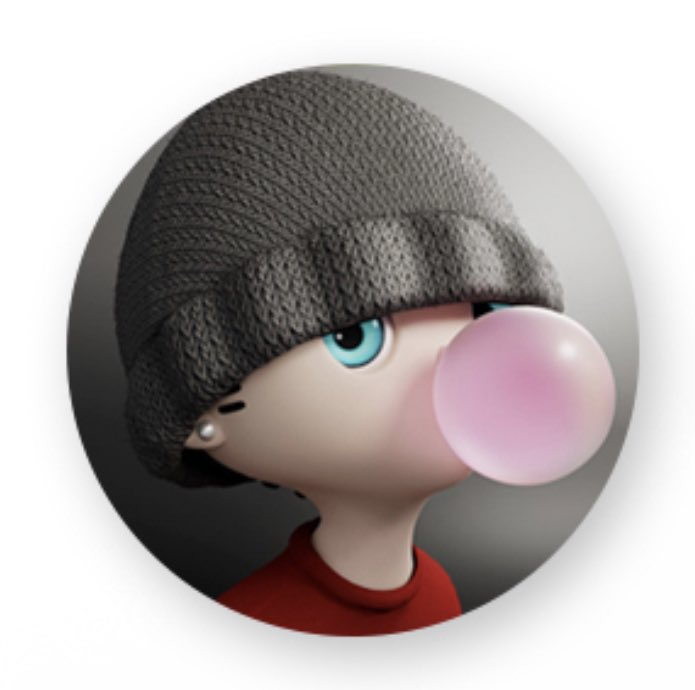

안녕하세요 저는 김재윤 입니다. 웹 개발 쪽에 관심이있어 오즈 코딩스쿨에 지원하게 되었습니다.
저의 취미는 새로운걸 배우며 도전하는 것입니다.
그 이유는 새로운것을 배우고 도전할 때마다 재미있고 도전하고 또
배우며 성장하는것이 즐겁기 때문입니다.
대학에서 시각디자인과를 전공했습니다.
다양한프로그램 (adobe 프로그램,피그마,블랜더 등등) 디자인공부를
하였습니다.
이과정에서 수업과 프로젝트를 통해 툴 사용뿐만 아니라
디자인이 소비자에게 어떻게 전달되고 소비되는지도 깊이 이해하게 됐습니다.
대학에서 시각디자인을 전공하던 중 수업 시간에
HTML과 웹에 대해 배우면서 자연스럽게 코딩에 관심이 생겼고
더 깊이 배우고 싶다는 생각이 들었습니다.
전공이었던 디자인 역량을 살려 프론트엔드 개발에 시작하게 되었습니다.